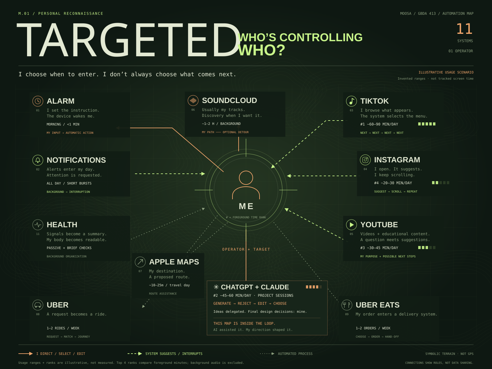

GBDA 413 / AUTOMATION MAP / MOOSA
A reconnaissance mission through the systems that wake, route, entertain, and assist me.
Find the systems. Look through the scope.Fire to expose who makes the decision.
11 signals. One operator. An uneven distribution of control.
RECON COMPLETE / TARGET IDENTIFIED
I choose when to enter.I don’t always choose what comes next.
This game is part of the loop: AI helped build it.My choices shaped the brief. My judgment determines what I keep.

Reconstructed from personal reflections. Usage ranges and ranks are illustrative, not tracked screen time. Background audio is excluded from the foreground ranking.